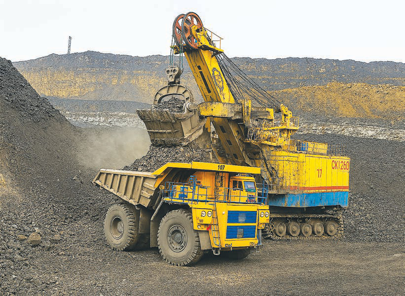

Diamonds in Tanzania are found mainly in Mwadui in Kishapu district, Shinyanga region. Mwadui continues to be one of the primary sources of diamond production in Tanzania.
Uranium minerals are found primarily in the Manyoni district in Singida region, the Bahi district in Dodoma region, and the Namtumbo district in Ruvuma region. Currently, uranium minerals are being explored for energy production purposes, although their extraction is still in development.
Iron minerals are found in Liganga in Ludewa district in the Njombe region. These areas are famous for having a large reserve of iron minerals. Liganga’s iron is expected to contribute to the country’s industrial sector.
Tanzania is also famous for various gemstones, including rubies and sapphires. Rubies are found in Tunduru and Songea districts in Ruvuma region, as well as in rural Morogoro and Ulanga districts in Morogoro region. Sapphires are found in Tunduru district in Ruvuma region. Both rubies and sapphires are very popular in international markets.